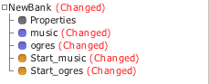
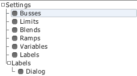
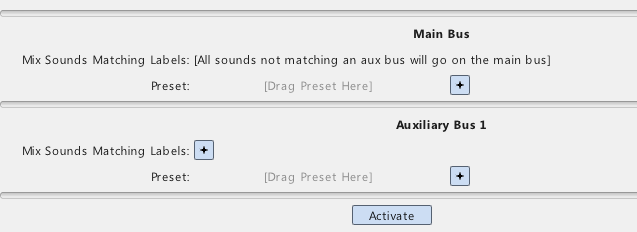
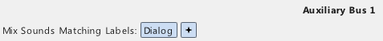
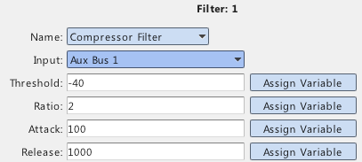
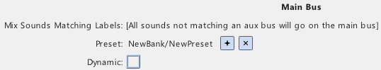

|
Ducking and Busses |
| Navigation |
This guide will cover how to set up busses such that music is automatically ducked by a dialog bus.
Requisite Terminology
New Terminology
Steps


[after clicking]

This tells Miles to initialize the bus system and create two busses. The first is the Main bus, which all samples
are assigned to by default. However, with the addition of a new bus, all samples matching the label query for the bus
are assigned to it. Since the default label query is empty, that means all samples will go to that bus, so we narrow the query to only assigning
sounds with "Dialog" to the aux bus.


The compressor filter will attentuate based on the strength of an input signal. In this case, we want to attentuate the Main bus, where our music will be playing, based on the volume of the Dialog bus, which is on Aux Bus 1.

 Presets and Variables Presets and Variables |
 Sound Designer User Guide Sound Designer User Guide |
 Dynamic Presets and Sliders Dynamic Presets and Sliders |

|
Miles Sound System 9.3b
E-mail miles3@radgametools.com for technical support. Copyright © 1991-2012 by RAD Game Tools, Inc. All Rights Reserved. |

|